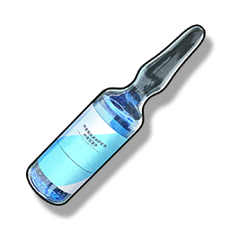

Premium Revival Potion
Supplies

After using this item, the designated Resonator in the team can immediately regain consciousness and recover all health, and can only be used once every 60 seconds (only effective for your own Character in multiplayer games).
[Potion Effect]Slightly stabilize the Resonator's status, assist in consciousness recovery.
[Precautions]The interval between taking this type of potion is long, it is not recommended to use it excessively in the short term.
[Contraindications]Prohibited to use in combination with the same type of potion or frequency stabilizing type of potion.